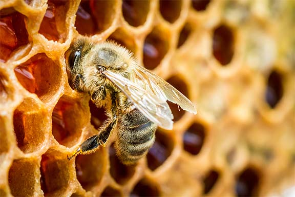
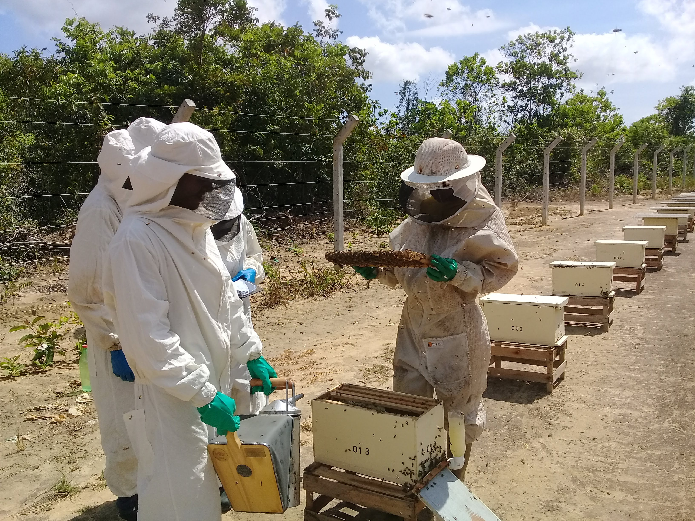

Tecnologia para Qualidade do Mel
Automatize análises físico-químicas e microbiológicas, gere laudos em minutos e garanta conformidade com as normas INMETRO e MAPA
Conheça as Análises



Automatize análises físico-químicas e microbiológicas, gere laudos em minutos e garanta conformidade com as normas INMETRO e MAPA
Conheça as Análises
Padronizadas conforme as principais normas técnicas brasileiras

Solicite uma demonstração gratuita ou fale com nosso time técnico
Fale Conosco